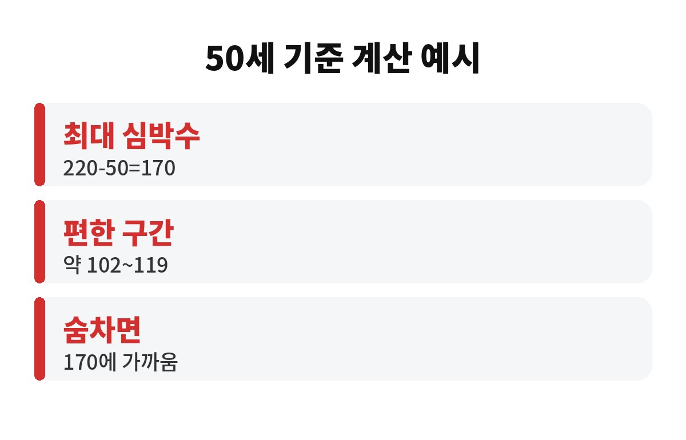
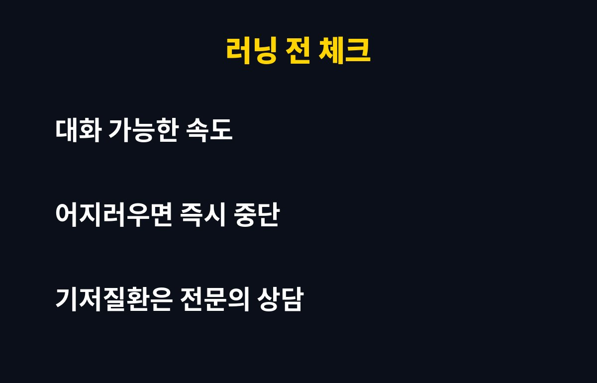

러닝 심박수는 흔히 220에서 나이를 뺀 값을 최대치로 보고, 그 60~70% 정도를 편한 운동 구간으로 잡습니다. 50세라면 최대 170, 편한 구간은 대략 102~119인 셈이죠.
그런데 40·50대 직장인이라면 달리다 숨이 턱까지 차올라 심박수 170을 찍은 적 있지 않으세요? 그게 열심히 한 건지, 몸을 몰아붙인 건지 궁금하시죠.
계산은 아주 간단해요. 220에서 내 나이를 빼면 대략적인 최대 심박수가 나옵니다. 40세는 180, 50세는 170, 60세는 160이에요. 나이가 들수록 최대치가 낮아지는 거죠.
다만 이건 어디까지나 평균을 본 어림값입니다. 사람마다 차이가 꽤 커서, 같은 50세라도 실제 최대치는 달라질 수 있거든요. 그러니 "공식 숫자에 몸을 맞춘다"기보다 "대략의 기준선"으로만 써 주세요.
| 나이 | 최대 심박수(220-나이) | 편한 구간(60~70%) |
| 40세 | 180 | 108~126 |
| 50세 | 170 | 102~119 |
| 60세 | 160 | 96~112 |
50세 기준으로 170은 최대치 바로 근처예요. 거기까지 매번 끌어올리면 숨이 차서 오래 못 달리고, 다음 날 몸이 무거워져 결국 러닝이 싫어지기 쉽습니다. 처음부터 전력으로 달리는 것보다 오래 이어 가는 것이 훨씬 남는 장사예요.
그래서 초보나 오랜만에 다시 뛰는 분이라면 102~119 같은 편한 구간에서 시작하는 게 좋습니다. "이게 운동이 되나?" 싶을 만큼 느려도 괜찮아요. 꾸준히 하면 같은 속도에서 심박수가 조금씩 낮아지는 걸 느끼게 됩니다.
있어요. 달리면서 옆 사람과 짧게 대화할 수 있는 정도, 흔히 말하는 토크 테스트가 가장 쉬운 기준입니다. 문장을 말하다 끊길 정도로 숨이 차다면 속도를 한 단계 낮추세요.
스마트워치 수치가 들쭉날쭉할 때도 많아서, 숫자와 몸의 느낌을 함께 보는 게 안전합니다. 수치는 낮은데 몹시 힘들다면 느낌을 믿으세요.
네, 달리다가 가슴 통증, 심한 어지러움, 평소와 다른 두근거림이 느껴지면 즉시 멈추고 쉬어야 해요. 40·50대는 오랜만에 시작할 때 특히 무리하기 쉬우니, 혈압이나 심장 관련 질환이 있거나 걱정되는 분은 시작 전에 꼭 전문의와 상의하세요.
오늘 달리기에서 여러분의 심박수는 어디쯤이었나요? 댓글로 나이와 편한 속도를 나눠 주시면 서로 참고가 될 거예요. 도움이 되셨다면 구독해 주세요!


※ 이 글은 일반적인 건강 정보이며 진단·치료를 대신하지 않습니다. 개인 상태에 따라 전문의 상담을 권장합니다.